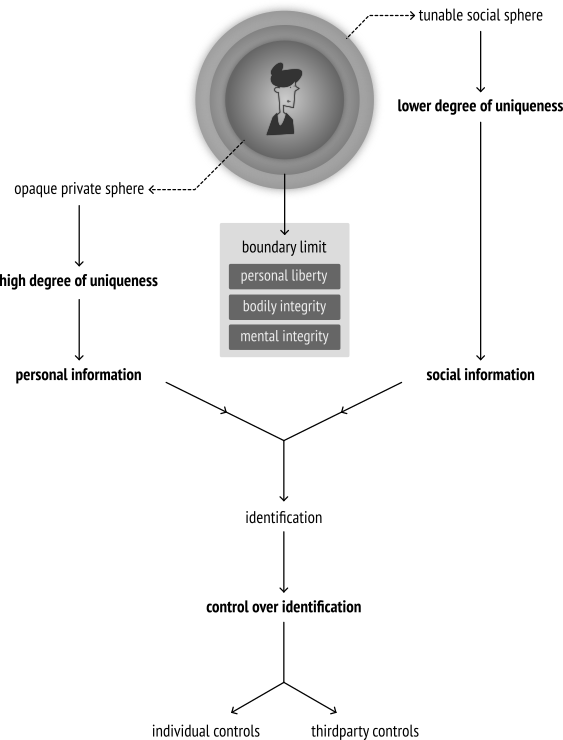
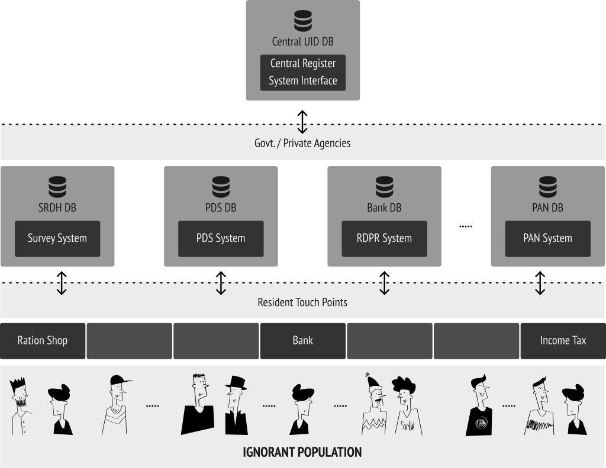
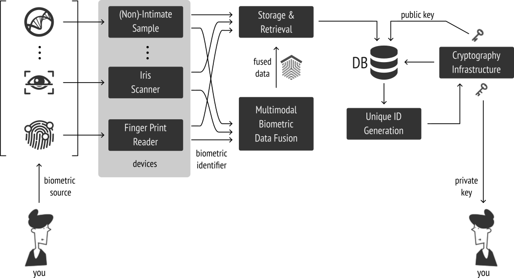
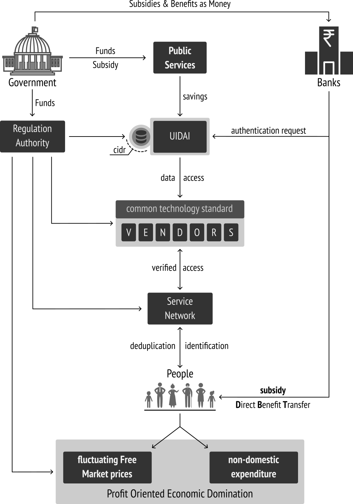

@/.\ ----+----------------------------+
/ \ | Hey people ! Enjoy reading |
| with wide screens :) |
+----------------------------+
+-----------------------------+---(me)
| The content is constantly |
| updated, so do expect, |
| changes frequently... :) |
+-----------------------------+
MY RIGHT :
The following are expression of my views about the Unique Id. system implemented in India, with two nefarious systems
in place, named NPR & UIDAI. I still believe, that having and sharing my views and thoughts, is still possible, with liberties
gauranteed by Indian Constitution. Founted from the values of freedom, democracy, liberty, equality, secular nature, civil
disobedience... i believe that constitution would rescue me from facing police brutality & sedition. There is no reason to
submit my proof of identity to anybody who desperately needs it. It is my liberty and consent to decide whether to provide
it or not. If any establishemnt or government officials, supporters felt repulsed by this, executing some dumb actions based
on despair, then it would be a best proof, that they are the perfect examples of dissent supression, & of conservational
coercion attitude.
WHY ? WHY ? WHY ?
Why am i writing this, when i have other interesting to do ? Basically, i dont like complaining about stuff,
crying around a problem, without atleast moving a stick or even trying that ! But literally we are in a situation
where critical thinking and open progressive discussion becoming few and rare. These days common people discussing
about social, economic, political environment, systems itself is considered as a rebellious attitude by the
governments and establishments. In India especially, every peaceful protest demonstrated by common people have been
systematically oppressed, subjugated, hindered since republic. As a result of continuous and cumulative
thoughts in my mind - sometimes, -- no most of the times -- i ask myself :
am i part of this republic nation that ensured liberty in its constitution ?
am i really living in a socialist secular democratic republic nation ?
does others feel the same way i do ?
TIMELINE
Thinking about when did i actually started following Aadhaar & UIDAI, i cannot exactly pin
point the date. As per my personal document collection from mainstream media and internet, it seems
somewhere around late 2010 i have got so much interested in it. So i thought it would be good to
have a recorded timeline of events and occurences that have influenced people so much for 10+
complete years. Obviously, i have collected the data from Wikipedia,
SFLC,
Hindu business line
websites & documents which i have saved so far.
For those who are interested in this timeline data, i have made it using JSON, and feel free to download
and share it with your peers, whenever you find it needed.
- Thanks to timelinejs team of knightlab, for creating it.
WHERE ARE WE ?
We are experiencing unique time in history, of post independent India, where Information and Communication has become inseparable
part of the society, which everyone necessarily craves for. Undoubtedly, we are going through hard times of social, economic, and
political crisis supplemented with creepy technological systems bullying at all scales. The climate provides the best ground, to learn
from not only our mistakes in the past, but also sufferings we face now because of our ignorance, non-participatory attitude, ...etc.
I believe, the issue surrounding the unique identification of every human within borders of India, will hammer us in multiple facets
- pushing us to think more rationally than yesterday. It does not matter what form the subjugation takes place, it is necessary that
we have become anti-ignorant than ever. Alternatives emerges from criticisms, not just through technological innovations, frustration
potential or crude democracy.
Similar conditions and problems are faced by other democratic nations all around the world. Solution is not a silver bullet,
and has to vary depending upon commonly agreed and gauranteed principles, culture, scientific reasoning, non-motivational
criticism, critical thinking, alternative suggestions, etc... Tomorrow's world is the world of commons, not the establishments,
not paternalistic governments, not the corporates, not heroes. It is upto us to decide radically and rationally what is suitable
for our current situation without damaging anything for future generations. It is upto us to decide, whether we play the game or
getting played. Decide for yourself. :D
LET'S THINK & ACT
Liberty without learning is always in peril, and learning without liberty is always in vain.
People as a collective entity come into being only through the basic constitution. It is by agreeing to a basic set
of norms about how one should be governed, and who should be governed that one forms a collective identity.
Political Identity:
One has many sets of identities that exist prior to a constitution. But by agreeing to certain
basic norms and principles one constitutes one’s basic political identity.
Moral Identity:
Constitutional norms are the overarching framework within which one pursues individual aspirations,
goals and freedoms. The constitution sets authoritative constraints upon what one may or may not do.
It defines the fundamental values that we may not trespass. So the constitution also gives one a
moral identity.
Ethnic Identity:
Indian Consititution, does not make ethnic identity a criterion for Citizenship.
National Identity:
Relationship between different regions of the nation & central government constitutes the
national identity of the country.
Type of identities listed above in NCERT book are the identities that have the purpose of social interaction with the people
and the systems surrounding the individual. Primary purpose that these identities founts from the acceptance of
common set of principles which the people agreed to live upon. So whenever a identity is requested based on a probably
cause by the people or authority from the government, then the individual shall produce the document/card/number that
directs to their social identity (think drivers license, passport, ration card, PAN card...). So we shall safely call these
kind of identities as Social Identity.
Usually social identity are generated based on readily visible, recognizable factors (think photograph...). Afterall, humans
interact with each other mostly based on visual communication. We are well aware that communication requires
identification. Uniqueness in identification for establishing a proper communication is derived from interaction.
where identity founts from ?
Personal Identity:
On the other hand, Personal Identity is not only inherently unique, but also personal in nature. The uniqueness
in this case is derived from the privately physical, biological, behavioral patterns. Such factors falls within the
opaque private sphere of the individual person, which they will not compromise with sense. This is where abstract
concepts like mental and bodily integrity founts from, that further gauranteed not to be tresspassed by systems
outside the personal sphere - by the constitution in a democratic nation. The privacy here is actually the phenomenon of
control over such traits. Since, the person is not willing to expose their introspective interactions, it
is represented abstractly such as personality, intimacy, right to left alone, right to have confidentiality, anonymity,
right to have secrecy, right to have faith & desires over their thought process and their life in general. A democratic
governance cannot penetrate through such walls.
NOTE:
personal identity can be unique, but deeply intertwined with personal liberty, which shall not be tresspassed by any external influences.
personal identity by birth nature everyone has got some or more unique forms (think personas) manifested physically, biologically & mentally.
personal identity cannot limit itself to biometric information and includes behaviometric information too.
social identity is a agreed form of identification between the individual and society, that helps for mutual identification.
social identity is either provided or requested in order to access a public benefit or service from the governance.
transferring key identification traits from individual sphere to social sphere, will cause irreversible damage to personal liberty.
it is the right of the individual - either rational or irrational - to decide on sharing private information with anybody.
Any Identification information cannot be easily categorized as personal/private id. or social id. Measuring the
degree of uniqueness varies with cultural history of the locale. However, in a democratic society, what is enshrined in the
constiution cannot be overriden by unjust powers in action - and it is upto the people of the nation to decide to collectively
decide what are all the information can be classified as personal/private and the rest shall be taken as socially identifiable
information. So, in general the set of information which would be valued with proximity towards personal values can be
considered as privtae id. Such information would obviously have higher degree of uniqueness.

Identity cannot be easily categorized, thus being anti-ignorant about who is in control and how identification is done is vital
When it comes to the process of identifying somebody through some means, it usually involves two key questions :
who is in control of verification ?
how the process is executed ?
Identification process can be safely and simply modeled as a process of transaction of information, between two parties.
It is safe to assume that somebody or some authority might request for identification with reasons of probable cause,
that intiates the process of transaction of identity information. It is basically a process of confirming whether me is me
at that time and place by another person - might be an authority in this case.
Who verifies it ? How it is verified ?
Individual controls Identification:
This process applies to both socially identifiable information and uniquely identifiable personal information (if the situation
requires it). In both the cases, the personal information tied to my personal sphere, cannot be taken away from me. Thus i
would be in control of my personal information.
Third party controls Identification:
With the probabilistic nature of identification, there is no absolute way of identifying somebody with the provided social identity
information. With the practical errors introduced in the identity generation process, due to wrong data, data that does not complies
with age, etc... which is where the requirement of a robust unique identification system has found its actual use. Uniqueness can
be derived either by using mathematical techniques(cryptography) seeded with the individual provided data or by penetrating the personal liberty to
extract unique information from biometrics or behaviometrics, added with cryptography.
NOTE:
The architecture of identification plays a central role. People has to be vigilent to check how the uniqueness in the identification is
derived :
by exploiting their private information and using cryptography over the extracted info.
by using publicly identifiable unique information (think email id) with cryptography.
in the end, who uses the private info./key and who uses the public info./key.
Having a unique identification with non transparent + centralized private info/key data base will lead to :
Irreversible risk of Single point of failure of highly attractive private key/info.
People to have blind faith on the systems administrators.
Bad security model and practice - security through obscurity.
High cost involved in maintaining the service, infrastructure.
Honey pot of streisand effect for digital crackers, compounding cost for establishing further layers of obscurity.
Renewing information for accomodating changes in identification, will make people objects of the system.
Who has complete control over the central id. database, will eventually have more responsibility and unmeasured power.
PERSONAL THOUGHT:
Thinking about uniqueness, anything that one can be isolated from the rest can be set as unique. That is how modern panopticon systems
work by applying persuasive soft powers where the majority falls for simple psychological play. Observing behavior, recording,
tracking and in turn enjoying emotionally satisfying service is what people of this era seems to ask for. But considering only ignorants
is partial. So, if the pace of personal intrusion, surveillance continues to extract uniqueness from biometric and behavior tracking,
then it would be very much possible to see rationally that dna, ear shapes, vein spread, penis size, breast size, distance between nipples,
foot pronation, voice, gait, etc... along with palm print, finger prints, iris, can be used to extract more and more uniqueness in the name of
reliable verification, identification and authentication system - so that we can access righfully deserved services.
Wait a minute ! am i being bit rude and extreme here... ? may be ! but i cannot help it, that is how my mind extrapolates to see what
can go wrong atleast in theory and thought experiments.
COMMON CITIZEN
When it comes to a citizen - personal identity is instrumental, as being a part of the socio-economic-political sphere.
Anyone could have a stand about social, economic, political situation of the society. This stand, could then be
expressed with the gauranteed fundamental rights & liberties of the constitution. The expression could take any form,
and thus by nature, cannot be refuted until it is made. Every individual has the right to express their political dissent,
which collectively plays a key role in the political climate of the society. This is balanced again by the constitutional
rights. Liberty cannot exist without empathy.
The way of expression, need not be limited through suffrage alone in a democracy. It shall take any form of communication,
and contributes progressively as long as the expression stays rational. The degree of rationality can only be asserted with
the degree of empathy involved in the communication. With the constitution, in a democracy, every individual citizen has the
right to dissent and criticize the establishments, organs of governance like executive, legislation and judiciary. Whenever,
a citizen felt the tresspass of their fundamental rights, then the constitutional law would stand for rescue. This inturn,
intutively declares that the constitution can only gaurantee fundamental rights, when it is rationally defended by the citizens
collectively. Democracy and Liberty has to emerge from people, and it must not be expected from the management team --
the state. Only then it is democracy or else its just list of options.
In the context of identity, especially in democratic society like India along with a Union of India - Republic government,
right to privacy is inherent within the right to life. This demands one to properly understand WHAT IS PRIVACY ?
in first place. Simply put, HIDING cannot be equated to PRIVACY. I believe that one can establish their
political identity through the currently available voters ID cards. Any citizen in India, irrespective of their
economic status can attain one, and based on the current election model, citizens participates in election. Similarly,
basic unit of economy, a family has ration ID cards. With these and other derived essential ID schemes in place,
the management team (government) can provide the promised services. So far, these identification systems, stayed within
the balance & never dared to tresspass the fundamental liberty.
MANAGEMENT
In simple terms, the governance model in a democratic society can be viewed as management system, that aids for proper
functioning of democracy while maintaining itself as a part of the whole. It is very much obvious that any management
system no matter to what degree its principles are truthful and sincere. Any institution that does all in its potential
to gear towards short term solutions and growth for existing socio-economic problems, might creep in bad practices, which
is called institutional debt. No institution can empathize each and every one individually and solve the problem
from their view point. This necessitates a collective response from the people and then try to solve it with better
ideas and concepts, without ever breaching fundamental consitutional principles.
Now directly and indirectly, people has to pay for this institutional debt - a cost incurred urgence to solve the problem
in a short term. As a result this seeds the vicious cycle of debting and costing that keeps the whole system in dead lock
without ever reaching a balance at all.
Why should people suffer in first place and pay the toll for the institutional debt, for the problems that arises from and
present within the institution itself. If a management cannot solve its own problem, then how can people rely on it to solve
the societie's problem ? Even when the problem is deeply and widely spread in common, no matter how bigger and powerful is
the solution, it is not worth to implement something that is anti-liberty, or anti-constitutional. If state and people are all
equal before the law, then the subjugating state, and its anti-constitutional activities has to be restrained.
If power of authority is derived from the collective extraction of responsibility from the voted citizens, then how come the
authority can override its source of power in first place ?
if any government deprives a people of their rights and oppresses them, the people have a further right to alter it or
to abolish it.
- Declaration of Independence (India)
ACCUMULATION :
Thus no matter how many powerful identification schemes the government tries to establish and push it to people, so that it can
ease its operation and duty, the people has the right to dissent it. It has to be remembered, that Unjust Law do exist
and a rational set of people, has the right and duty to associate against such unjust laws and acts. Accumulation of these
these unjust laws, acts as the subjugative source for the state, which in first place have occured because of irrational,
unthoughtful, short-term solutions, which erodes and deprives democracy from within, leaving behind only cold authoritarianism.
Such conditions serves as the means to do whatever the established institutions, individuals, bureaucrats, plutocrats, technocrats, ...
wants to do. This will enroll the whole system to a periodic and frequent short-term solutions, crisis and problems that keeps pounding on
the society itself. This eventually constructs a vicious cycle, which is a result of ignorance about democracy, absence of -- participation
in democracy. Management, instead of helping the society self organizable and self managemeable and dissolve itself later, seems to
continue in perpetuity. Definetely the current bearing of government is not towards it. People being reduced from citizens to subjects
to objects to commodities becomes normative as part and parcel of the effect.
PERSPECTIVE OF IDENTIFICATION :
One has to be aware what identification is, and what is actually not. Furthermore, people needs to know when identification
is required and who shall initiate the identification in first place. A clarity is necessary to understand the suttle differences,
which eradicates the misuse of identification systems. Following are the points i learned from identification systems. It is
always safe and just to look from an individuals perspective when it comes to identification. Technology can be present, but
not at the expense of individuals liberty and violation of fundamentally gauranteed consitutional rights, principles and directives.
Id. is neither a simple asset not a commodity of trade
Id. Need not be given to a central authority
Id. Need to be with the individual
Id. can only be requested by the state, that too after stating the probable cause
Id. is an interface between personal and social spheres
Id. through Unique Numbering might result in chronic misusage
Uniqueness from biological/behavior uniqueness, is intrusion to personal & bodily integrity
HUMAN RIGHTS ?
No one shall be subjected to arbitrary or unlawful interference with his privacy, family, or correspondence, nor to unlawful attacks on his honour and reputation.
Everyone has the right to the protection of the law against such interference or attacks.
- Article 17 of Covenant - International Human Rights Law
Paragraph 1, encapsulates the notion that a person is free to selectively reveal herself to others, or in other words,
to have control over her identity. The United Nations Human Rights Committee (UNHRC) has frequently pointed out that
Article 17 is a ‘gateway right’, the protection of which is necessary to ensure the effective enjoyment of other civil
and political rights, such as freedom of association, movement, political opinion, and so. This is because the prying
eyes of others may have a chilling impact upon our choices – particularly when we wish to choose to do things that,
although perfectly legal, are considered to deviate from social norms or are taboo. It is for the most part directed at
governments, Article 17 applies to any interference with privacy, whether it emanates from the State itself or from
other private persons.
Paragraph 2 obliges States parties to enact laws protecting against such interference. Specifically in relation to data privacy.
It has opined in general comment on Article 17 as : "The gathering and holding of personal information on computers,
databanks and other devices, whether by public authorities or private individuals or bodies, must be regulated by law.
Effective measures have to be taken by States to ensure that information concerning a person's private life does not reach
the hands of persons who are not authorized by law to receive, process and use it, and is never used for purposes incompatible
with the Covenant."
Although it has been said above that privacy is a fundamental human right, Article 17 reveals that it is not absolute and
may properly be limited as is necessary and appropriate in a democratic society. This is because interference with privacy
is proscribed only insofar as it is “unlawful” or “arbitrary”. A measure impinging upon privacy will be “unlawful” where
such intrusion it is not authorised in legislation. Its basic purpose is to outlaw the unilateral curtailing of human rights
by the executive – which, historical experience indicates, will generally be far more ready to trample on human rights than
the legislature. In this way, States are permitted to limit the right, but are required to do so in a manner that is open and
subject to the public scrutiny of the political process.
In assessing whether or not the measure was arbitrary in the sense contemplated by Article 17, His Lordship adopted the “reasonableness test”
propounded by the UNHRC. In order to satisfy the requirement of reasonableness, any legislative restriction on the right of privacy must be:
Rationally connected with one or more of the legitimate aims
The means used to impair the right must be no more than is necessary to accomplish the legitimate purpose in question
Summarising the above analysis, the right to privacy is fundamental, but not absolute. It may be limited, but such limitations must be
provided for in legislation – which itself must be detailed and specific as to precisely when and to what extent individual privacy may
be compromised.
So ? ... What's the problem ?
One shall easily see where unique numbering is usually deployed ? To understand the seriousness of the unique
identification, one can compare and contrast the existing systems where unique id. has already been in place.
(which i personally see has a certain degree of coerciveness to them). Around us, we have seen them in
the following scenarios :
In products:
Mostly we see them in packages, consumer products, devices and machines that one purchases,
that take ownership on. Any two objects which are highly similar can only be discriminated
by only using a unique number generated through some means during production, and packaging
process.
In Controlled Parks:
Other case is that, for wildlife, preservation and monitoring of their population, sancturies &
national parks usually involve numbering the species to collect data, profile their behavior,
to understand their interactions with each other, ... etc.
In Jails/Prisons:
Also we know that people
in prisons are numbered for unique identification. This makes it easy for counting, identifying,
surveilling, segregating, isolating, and managing the whole group, that actually reduces the pain
of management and administration. Rules have definetely eased management and it is possible, because
proximity of influence is within the prison.
In Emergency Environments:
People would be numbered in large scale hospitals. Again this would enable the management to
automate certain process that could help keep the hospitalized (ill) people safe and secure.
During emergency situations this helps in maintaining the order of the process dictated to
make sure the system operates without any emotional disturbances.
In Examinations:
When people are examined strictly as a formal process to test them for their talent or anything
else, usually involves supplying a unique identification number to make sure the test is
executed without any malpractice. Anybody can be subjected for inspection by squads and examiners
without the need for consent. Only the authority has the deciding power till the exam duration.
(this is the case atleast in India).
My argument is not about the pragmatic usage of numbering and unique identification, but about the psychological
effect that such a scheme would create in the authority or whoever tries to push it. It has to be noted, that unique
identification so far has only accompanied with technology that provides completely centralized and obscure control
over the id's. When somebody is numbered and uniquely identified with it, they cease to exist as a human,
and reduced to just a number in a list. A government enforcing such scheme by advertising and endorsing the
embedded pragmatic advantage has just reduced itself from benevolent governance to brutal warden.
We reduce ourselves from a welfare society, to just a controlled environment where anything can be experimented without
our consent.
How come the above situations are different from whatever scheme a central authrority provides and promises ? One can
easily understand, that a numbering system always comes with neglecting liberty and pushing subjugation, in the name of
pragmatism. Is it not disturbing to treat each others as commodities, and reduce ourselves to let subjugate ourselves.
At the end of the day, government is run by common people mostly who are already busy with their daily routine to survive
and to earn a decent monthly wage to feed their families. Does Unique Identification, is that worth to keep it deployed ?
So,
am i a product ?
am i a convict ?
am i a lab rat ?
am i constantly examined, tracked, monitored ?
am i just a consuming machine ?
am i not a citizen ?
am i not a human ?
- XKCD
Big Brother in the form of an increasingly powerful government and in an increasingly powerful
private sector will pile the records high with reasons why privacy should give way to national
security, to law and order, to efficiency of operation, to scientific advancement and the like.
- William Douglas
Let's talk about UIDAI, & its Aadhaar as rationally as we can. This is not going to be something similar to wikipedia article
about UID/Aadhaar and those who want to read that could please go visit and learn.
I wish to have a unbiased discussion with myself about the issue, and why set of people are polarized, look at their perspectives,
suggestions and arguments about the system.
this is how people experience about UIDAI/Aadhaar ... always haunted & confused
- XKCD
Those who have patiently made through the above Mortmain of UID story timeline, could have already basically
understood what are all events happened that eventually lead us to the situation we are right now. For people like
me the following block diagram help understand the situation. From, this one can understand why pro-aadhaar supporters
inherenly proximate around the reasons of national security, terrorism, corruption, etc...
almost everything here is unconstitutional, anti-liberty, immoral, unethical
I have mentioned only the most important event and reasons that are basically the root cause of the situation. The diagram
could only provide a abstract guideline, and for much accurate details please play with the timeline.. :)
Unique Identification Authority of India (UIDAI), a statutory authority established on 12 July 2016 by the Government of India,
under the Ministry of Electronics and Information Technology, under the provisions of the Aadhaar Act 2016. As one could
see in the above timeline, UIDAI is established in a circumvential way avoiding direct questions. Simply said, it has not
faced proper deliberation process in houses of parliament. It was initiated just like that by establishing an office
in Delhi, and started executing its operations and actively interacting with the other systems and institutions of governance.
Only after significant uprise and strong feedback, perhaps with delay - government then provided a statuatory support for it. The
delay in the process is easily hijacked by the office and its team, to roll out tests, persuade through technical brand, euphemism,
& political influence. Furthermore, how (means) the statuatory support is established does really matters. If
such process is abnormal, then we people has to be be aware and pay more attention to why such a unethical and unconstitutional
push is done ?
NOTE:
why first execute & then provide statutory ?
why established through money bill ?
why not other policies or schemes like Lokayukta or Janlokpal did not followed such course ?
it actually represents the administration of resources involved in Aadhaar system
As defined by UIDAI, Aadhaar represents the Unique Id. number provided to the voluntarily enrolling residents.
In reality, we know that Aadhaar is actually a private trust owned by the former chair person of UIDAI (Mr. Nandan M. Nilekani).
The technological spine of the scheme claimed as Aadhaar ecosystem is actually branded as Aadhaar. Based on the
set of technological process involved, (which they believe they will make it work regardless of diversity and scale of population) along
with the modern euphemisms specifically made up for marketing such as "deduplication", it continued to push the system in all possible
arenas and stages steadily. It seems, for layman a little bit of euphemism and awe of technological concept with non rational marketing
worked out very well. We have to accept that even with hardship it has succeeded in its marketing and enforecment goal to a significant
degree. It even gained its position in the established act itself.
NOTE:
is it a number or Id. card ?
it actually represents the technological machinery and brand for Unique Id. scheme

Technology Overview as depicted once in uidai website - redrawn in my style :)
PERSONAL THOUGHT:
Being an individual who have for atleast made some contribution to science through open and peer production methods, as much as possible,
without compromising the philosophies and principles of openness and sharing -- i could only see a group of people who firmly believe in
technological determinism to extrapolate their skill and potential to use technology as silver bullets for all problems they encounter with.
However, in reality neither any social problems nor the economic problems can be solved in such way, and always history of technology has its
limits at that point of time, from which innovations in social, economic and political sciences would involve and help realize the
solution practically. As far as i know, such blind belief is just equivalent to follow a religion.
It is the technical definition of Aadhaar act, and has been the claimed goal of the whole UIDAI thing. It is well known, that we are facing
several socio-economic problems that often leads to economic crisis. To address the economic problem where significant part of it involves
the public service of goods, benefits, subsidies which the governance system constantly performs to address the peoples need for whom, when and
where necessary. Public distribution of essential goods with significant subsidized cost is fundamental in social welfare perspective. With lot
of middle men eating up, people are left with only the remaining of the service promised. There is too much middle men and agent in the supply
chain and thus representatives thought of reducing the distance between the service provider and the service accessor. This can either be done by
systematically uprooting the corruption with political will or by hopefully circumventing the middle man assuming corruption will die in
the process.
3 Part System - this is how govt. advertises the solution
Now with the claimed power of DBT (Direct Benefit Transfer) as a silver bullet, which requires target delivery, technocrats claim that there
is an established and novel solution of unique identification of each resident of the country who rightfully access the social and economic benefits.
That is where legal support for establishing such a project becomes temptatively necessary. Amended Citizenship act with mandated national id. card
for every citizen was taken in hand to solve the constitutional problem. With all the ruckus played by the governments in power between 2001 and 2016,
now we have this statutory act, which literally have become a super problem that once claimed to be the solution for some other problem.
The proposal of any new law or regulation of commerce which comes from this order, ought always to be listened to with great precaution,
and ought never to be adopted till after having been long and carefully examined, not only with the most scrupulous, but with the most
suspicious attention. It comes from an order of men, whose interest is never exactly the same with that of the public, who have generally
an interest to deceive and even to oppress the public, and who accordingly have, upon many occasions, both deceived and oppressed it.
Basically UID/Aadhaar employs a type of multi-modal biometric system for uniquely
identifying a person. Like any other measurement and instrumentation chain, it also employs a data acquisition acquisition using sensors,
preprocess it, store it and use it later for any purpose for which the whole system is designed for. With more and more characteristics
measured from the sensors, data dimension increases multi fold which compounds complexity of the system. Like any other measurement it
is inhenrently probabilistic in nature. Thus principles and methods of probability and statistics over the authentication and
identification process play a significant role.
Scientifically nobody can deny that there are range of values is the only possible outcome, and it would be unscientific, & denial of truth
if somebody claims that they can identify an individual uniquely with 100% conformance (YES or NO decision). It is just a clear indication
of how much the claimer has addicted to their belief system and thought process. This is where certainly, several biometric data is acquired
from the individuals to profile biologically(biometrics) or using behavior(behaviometrics).

A generic - CENTRALIZED - Biometric system for ID. as i understand
Using Biometrics for verification/identification/authentication/authorization
systems, naturally requires individuals permission before even attempting to formally extract the biometric data using various sensors &
instruments. The fact, is wherever we go, we spread the same biometric information while interacting naturally with the environment and socially. Thus
there is high probability of somebody extracting the same biometric data, and use it to cheat the authentication, and identification system - atleast
in theory. With todays cracking skills and gadgets it can be demonstrated like here and
here.
Flaws we sense and see in UIDAI's Biometric based ID system
The moment the biometric data is extracted, the enrollment system has actually punctured through several layers individuals opaque private
sphere. This potentially will call for a huge social cry pertaining to right to life, privacy, etc... atleast in a democratic society.
Moreover as depicted in the above diagram, a generic biometric system even when tresspassing the invdividuals liberty, will not usually implement
a technology that will not store the individuals private info. (that uniquely identifies them) in their data base. While UIDAI, reversed the whole
situation and took a non-rational approach to store the private stuff with themselves. This with tresspassed liberty, in addendum creates central
non replaceable dependency and gathers immeasurable power from it. The assumption is beyond the engineering and security principles. UIDAI simply
seems to assume that its security cannot be ever broken.
Information Logistics
People think, and readily agree to assume and assert that current information and networking technology in hand shortens the distance between entities
for communication, without ever evaluating the actual distance involved in the logistics of information travelling between two points in a network.
In the case of information relation projects such as UID, where the communication infrastructure and web over it are mostly under constract stress
of security and bandwidth constraints - the knowledge of information logistics becomes much more vital than ever. In conventional
internet - which UIDAI also depends upon to a significant degree, is controlled by ISPs', Telcoms'... who inturn forms the network backbone
infrastructure, over which web based services are run from servers to users. The fundamental infrastructure is identifiable by internet address.
Hiding the location of a respository in internet becomes complicated and requires several layers of hidden translations that calls for heavier
resource utilization and funding, that itself recurse continuously for maintenance.
Just because data packets are travelling at the speed of electromagnetic wave in the available bandwidth of mediums of communication, it does not mean
the travel distance are really getting smaller and smaller. In fact, with the growing bandwidth requirement and innovation in communication systems
that provides more and more bandwidth for data - the distance gets bigger and bigger - controversial to popular belief. In fact, highly demanding
services, when centralized that require high bandwidth, technically requires servers with increasing performance by day. Thus, even corporate establishments
are switching over to alternative network topologies to make the network more flexible, adaptive such that every node in the network acting as
peers of bridges that help communicate - effectively reducing the distance. It is very similar to dynamically constructing roads based on requirement.
In the case of UIDAI, since the structure of Aadhaar is highly centralized with several "unknown" layers of contractors, sub-contractors, sub-sub-contractors
work between UID-CIDR and user, speed of transaction is just governed by the number of levels between UID and point of service. Appearance of "immediate"
service of authentication and identification is just the feature of fundamental internet topology. Furthermore, the hickups in transaction becomes dependent
upon the ISP and Telcoms' imposed limitation. This again calls for huge investment in communication to attain maximal bandwidth and reliable connection. There
is no direct connection between UID and the user. There are lot of points in between them, which neither UIDAI nor the people can control. Furthermore, in India,
with only somewhere between 3% & 28% of people have been
digitally connected, awareness of digital communication, affordability of communication, accessible and affordable power supply infrastructures pose an
unsurmountable challenge.
It is so obvious, that not everybody can easily use UID based services. With the current state, only the people priveleged to access internet, who could afford
mobile phones and computers might use it. Even if rural population are facilitated in their locality - education, awareness and travel involved in accessing the
service becomes harder and harder and calls for further state expenditure - which could be alternatively used for school education empowering with computers,
and free software systems; spread internet through support and funding community networking systems; renewable energy systems, etc...
Whether it is NPR(National Population Register) or UIDAI-Aadhaar or any other future system that relies and believes on biometric systems for human
identification using the extracted uniqueness, must be transparent about the inherent cracking attacks that can be exercised by a cracker ; privacy
issues involved in the core mechanism. In the above paper, Nalini K.Ratha states a list of 11 possible attacks grouped in 4 kinds, along with 5 notable security
& privacy concern.
Biometrics is secure but not secret - inability to keep it secret
Biometrics cannot be revoked or cancelled
Cross Application invariance - central dependency leads to central point of failure
Persistence - challenging when it needs to be changed
Cross-Matching - tracking without consent is possible
Even when Nalini K.Ratha advises thwarting mechanisms and alternative strategy (cancelable biometrics) to make biometric identification,
there are a number of core technical challenges that are hard and tough when implemented in a large scale scenario like India. Precision
at all stages from biometric extraction, enrollment, template generation, forward hash generation ... etc. Still i am certainly not
happy with :
centralized implementation
closed technological development model
private-public partnership
volunteering through denied access of entitled benefits (coercion)
delayed justice in personal liberty issues
false justifications and propaganda mobilized by Aadhaar scheme & its supporters
strategy to deal with socio-economic problems like poverty
We are not in the right time & phase, to use Biometrics voluntarily.
Technical challenges are complicated enough necessitating much more time for research.
We must not let technological fetishism & determinism to close our rational thinking.
Addressing the socio-economic crisis, seems to be the projected goal. However, choosing unique identification as the problem solver is not
radical, instead demonstrates the stupidness and ignorance of rational understanding of how systems are connected so tightly already, such
that no matter what circumvention is applied using technology, people (have brains and they are greedy), will find a way to circumvent the
circumvential process implemented. Moreover, supplying required public good like rice, wheat, sugar, kerosene, palm oil, etc... that are
essential for the need to thrive is a social process.
Simplistic view of PDS and Citizen interactionCan circumvention strategy eradicate corruption or leakage ??? Think about it !
Stating that targeted delivery of finance though DBT (Direct Benefit Transfer)
to people instead of really serving these essential goods, will lead to :
people will become more dependent upon currency value
people will be habituated to expect money for every service
social progress and service will be submitted for market dominated economy
with fluctuation in market values, government might have to keep rising the cap of financial subsidy
governance looses moral authority and just reduces itself to a financial machinery
Such a motive is obviously is not welfare, but indicates carelessness in understanding economics of the country. Suppose, if government fails
to adapt the market fluctuation, then people will obviously loose faith in governance support and services. Highly complex regulatory bodies and
institutions will become necessary, requiring more tax, to handle the balance between market domination and state expenditure. This would eventually
lead to submission of socialistic principles and state policies to global market domination in which the state has no power to regulate and just has
to comply with it. Moreover, every essential - material and immaterial needy thing in day to day life, will become a commodity with price tag set by
market. Losing social safety nets for lack of innovation in socio-economic practices is not worth.

DBT, UID would form vicious loops which costs further state expenditure & unnecessary socio-economic problems
Economics of Mandation
We can frankly sense a chilling effect, acceleration towards surveillance sate - but most of us think that it is stemming from a subjugative attitude.
There is a difference between cause and effect. Mandation and the resultant subjugation is the effect, but cause is economics related to funding
of government departments and corresponding service agencies. As Kiran Jonnalagadda puts it:
UIDAI is funded by the savings from eliminating fraud across departments. It didn’t require an additional budget
and was therefore easy for the government to approve. Notice that this has been a consistent message across years.
To avoid the waterfall trap of a government contract, UIDAI was built by volunteers, with contractors coming in only
after the foundation had been laid.
Both fingerprint and iris scans are used. All ten fingers are scanned. Backup options are included (in theory)
when biometrics don’t work.
To avoid vendor lock-in: UIDAI put together a consortium of vendors agreeing to a common standard, using the sheer
size of the database as leverage to get vendors to open up. This also means getting to that large size is crucial,
explaining their hunger for enrolment. Biometric matching software from multiple vendors is run on the entire database
for every new enrolment, with vendors paid for performance.
The government departments funding this will only realise their savings if 100% of their enrolments are via Aadhaar.
Any beneficiary who is enrolled twice, once via Aadhaar and once without, will remain undetected as a dupe.
This explains their drive to make Aadhaar mandatory. This isn’t a government conspiracy or a surveillance state,
it’s plain economics.
What kind of Economics is this ?
Interesting.. ba ba but... !
Most glaring thing about Aadhaar’s design: it’s entirely top-down, funded by savings from eliminating fraud, and
inherently designed to protect the benevolent state from bad actors such as minor officials and you.
- Kiran Jonnalagadda
What kind of economics is referred here ?
Who are the bad actors actually and factually ?
Why vendors are so hungry for such a database ?
What is the profit for vendors in becoming part of UIDAI system ?
How come claimed fraud elimination yields to savings for public service agencies ?
Why create vicious socio-economic loops that reduce us to just consumers ?
Effect of social mandation because of assumptions indicate the non-service motives.
Do we really need human identification system that spins off market dominating economy ?
Beware of Commodification
In the age of Information, & Communication, where intangible lives above the tangible infrastructures, and has the power to influence day to day life
centralized hierarchically controlled profit oriented, market dominated business systems have created a massive economy where anything fundamentally
inaccessible but are abundant are prone to commodification with huge demand, to yield multi fold profit returns. This is what instantiated internet based
business systems to use advertisements as the means to generate profit, which forever has polluted its climate as we see. The following patterns have been
and will be seen :
Commodification of Content
Closed source OS & Anti-virus, Anti-Spam,... market
Deterministic non-adaption to file sharing techniques
Hammer P2P technologies, in favour of Centralized services
New commercial service for non-advertizing access to websites
Commodification of Privacy (purchase privacy for money)
The commodification attitude just leverages on peoples fundamental psychological weakness which massive corporates have learned to capitalize in a way
pepole will not feel pain. Just triggering the right psychedelic mix of service interaction, with the individual and innovating frameworks that keep
them locked as far as possible is the main stream through which profit can be extracted. In such process, just polluting a platform first and then asking
for money in order to provide a privileged place without pollution in the platform is one strategy. Similarly, just taking away something which we do not
imagine will ever happen, and show it back that it happened, will trigger fear of security and erosion of privacy - that is enough to subscribe to
services that gaurantee privacy and security - again by "reliable" establishments.
Are we that dumb to let UIDAI/Aadhaar, NPR,... help agencies to do just that ???
The story of the HKID (Hong Kong ID) is a classic tale of function creep. Plainly, the questions that lawmakers and policymakers have been asking are:
“Now we have this wonderfully reliable (and extremely expensive) ID card, what else can we employ it to do? ” And: “Given that this
ID is more reliable than any other, why would any government department – or indeed private organisation – not use it?” However,
it is precisely these questions underlie the perverse “logic” of function creep. As has been emphasised above, it is critical
to start with the goal that is sought to be achieved. Precisely the reverse has occurred in the legislative path that has
led to the near-universal application of biometric identity documents in Hong Kong. This is emblematic of systemic failings
in the legislative approach to biometric technologies – and indeed to privacy in general.
At the conclusion of the second reading of the Draft Identity Cards Bill in United Kingdom's Parliament, the Information Commissioner chastised
the administration for failing to identify even in broad terms what the purpose of introducing the card was in the first place.
The response, when it finally came, was that the purposes of the proposed card were:
national security
prevention and detection of crime
enforcement of immigration controls
enforcement of prohibitions on illegal working
efficient and effective delivery of public services
Please be straight - Is it Voluntary or Is it Mandated Volunteering ?
We have to realize that science, engineering, production practices, evolution in skill, accumulation of past techniques which are
just intertwined interactive evolution of social arrangements with technological innovations. It is fact that scientific and engineering innovations
have influenced radical changes that further propagates socio-economic repurcussions for change & vice versa. This is not a unidirectional
influence but a bidirectional interaction, or simply a symbiotic cycle through which human society advances further and adapts. Overhonouring technology
and considering it as silver bullet, such that one would act at any length to realize the solution that would affect everybody forever,
is just not science. It is religion.
In the case of UIDAI/Aadhaar, i could see only such a group that would go for any length to realize their belief and founted figment of
imagination. Honestly, What would one do if they get a massive political support, along with huge financial support to do what they are
good in doing ? Even with such support, mobilization is always a inherent problem when addressing social context. Somehow, a critical mass
has to be mobilized and make them use the project (its technology, services). That is where the initiators and founders of the project
have innovated the mandated volunteering tactic, that actually pushes people into the zone of confusion and fear.
Mandated Volunteering confuses people, cornered them & coerced to enroll for UIDAI/Aadhaar
By simply declaring that the enrollment is purely voluntary, while on the other side agencies and institutions of governance, mandating
people to meet the basic requirement of UID in order to access the deserved services and goods, is deterministically confusing. People are cornered, to
choose between hunger and principles. They are not only cornered but democratically assaulted just by exploiting their ignorance, economic
status, dependency on government for services, posing national security threat, terrorism. This simply shows that as a nation, we do not
have adequate defence mechanisms as well as shitty socio-economic, democratic policies. The Supreme court, being last resort cannot make
a clear decision as of now, knowing about this double play on one side and stating its limitation on the other.
Holocaust & IBM:
We all know how Nazi regime in Germany has lead to social and political learning for humanity in general - but in a hard way.
It is also well known fact why and how IBM has helped the regime in various requirments for generating numbers for identification,
maintiaining data tracking the record of jews and citizens of other country imprisoned during the nazi era. In IBM's perspective
it has simply operated its enterprise purely based on profit motive. As long as such arguments are taken and in line of thought,
the argument gets history from business operation stripping off business ethics. However, inspite of running around the complicated
innards of the such a dark history, one could in general get an idea how a purely isolated stand without taking a ethical or
empathetic stand or responsibility will lead to irreversible catastrophic effects where the sufferage is experienced by people
who does not have the slightest connection or any understanding about the systems in place. They are inherently innocent about it.
Based on the facts provided by the international investivative author Edwin Black, in the 12 year nazi regime, there has been
a continuous participation and several attempts of IBM's contribution to the Reich. Dutch subsidiary of IBM worked in tandem with the
Nazis, and company President Thomas Watson’s personal approval for the 1939 release of special IBM alphabetizing machines to
help organize the rape of Poland and the deportation of Polish Jews, as well as the IBM Concentration Camp Codes including IBM’s code
for death by Gas Chamber. IBM engineers had to create Hollerith codes to differentiate between a Jew who had been worked to death and
one who had been gassed, then print the cards, configure the machines, train the staff, and continuously maintain the fragile systems
every two weeks on site in the concentration camps.
Gandhi, Transvaal and Disobedience:
Those who have studied the origins of Gandhian ideology, would have necessarily came to know about the deterministric pursuit of Transvaal
colony to register peoples of asiatic community to identify themselves and their families using their Finger Prints, which initiated the
act of civil disobedience by M.K. Gandhi by burning down the identity cards as an act of civil disobedience and demonstration of his stand
against an unjust law. If there is something we can learn socially from the act of disobedience one must try to atleast think why should a man
stop himself in registring himself ? Why he has restricted it ? What is so serious about it ? What has made him to actively apply the
conceptual framework of civil disobedience into practice ?
- Thanks for Mr.Sunil Abraham for reminding such a historical proof into the picture
NOTE
My point is that i am not suggesting that any other unique numbering system will lead to similar problems. I accept that this is an
extreme comparison, but it still provides us the awareness to stay vigilant and provacative action necessary to stop any identification
system based on unique numbering method or technology - which obviously loads the common citizen, and civil societies nowadays. Even
then with necessary cautions, demonstrations, establishments nowadays has a hegemonical approach in doing what they wanted to do, all
in good intentions.
Thus no body cannot even theoretically deny the empirical evidence that history provides us about how numbering can go wrong.
That too with already myriad of technological and economic flaws in UID/Aadhaar project in hand, massive centralization, honey pot
creation in the age of ICT, actually creates the problem of national security that never existed before. Here the centralization can go
wrong in two ways.
A external cracker remotely attacking or silently intruding into the system and disappearing without any trace Even ignoring one of the possibility
Administration and Authority failure of some kind in the UIDAI itself at several layers of administration and execution
Even with the best of intentions, nobody cannot claim that the system will remain completely secure for ever. Centralization inherenly has its risk of
failure. At the same time nobody can deny the fact of potential powers of numbering people. Once numbered, there are innovative number
of ways which it can be used. A ethical system of rules cannot step itself aside from accountability, stating that it just helped in identification
and nothing more. Why is that ? It is very much equivalent in arguing that "...i am not a participant in the war, but i am the manufacturer and firearm
supplier for the participants of war. I have done what is necessary for sustaining my business and maximizing my profits in the competetive world..."
It is a similar stand where UIDAI/Aadhaar takes now. It may provide a claimed "YES" or "NO", answer - but it cannot deny potential point of failures.
Whether it is a punching machine that counts or a biometric database number crunching engine, technology cannot be blamed for it has never been good,
not been bad, not even neutral. It just works for whoever controls it. It is only humans and their "human factor" that neutralizes the ill and grave effects
that the orchestrator propagates.
The only possible solution for such criticism based on historical reasons, - only to make the identification system completely transparent at all layers
and levels of operation, with complete decentralization. Else the UIDAI project is going completely in similar directions as earlier ID programmes. If it is going
to keep on taking a vangaurd approach, then it exactly represents a ticking time bomb which we ourselves have voluntarily planted, as a result of economic
coercion pushed by public service agencies. It would be a miracle if the project does not creeps to other commidifying services, misuse etc...
Forced Social Accumulation:
We have to accept that UIDAI, has really innovated from the extreme corporate cultures of digital world,
and dared to bluntly apply to a vast democratic nation - India. Since most of the people are ignorants
(yes they are intelligent than us, and we are bunch of fools and sheeps). it cannot
be denied, that technocrats have achieved it in one way or another. They have definetely inspired further
subugative regimes to adapt the Mandatorily Volunteering mechanism to reap power from the people
easily. Personally, i see it as a political innovation on how to mobilize themselves by immobilizing the
criticisms and actions against them and their extremist ideologies.
It seems that only few factors are necessary to push people at such scales.
keep people under constant fear of war, national security threat, terrorism
keep them super busy with daily life and stay ignorant about broader things and systems
often mobilize coercive forces (may be police brutality, economic coercion) to show "who is the master around here ?"
stop providing rightful and deserved service if people do not comply
(economic coercion)
never make them leave once they fall prey for subjugation (trap)
call them anti-nationals and anti-technologists, luddites whoever criticizes
Aadhaar is like building a bridge and then looking for a river. It is hunting for problems to make itself relevant.
- Senior Advocate Arvind Datar
People accumulated through such dreadful strategy seems to work in country like India. Even when UIDAI/Aadhaar
has not used all of them, it has used atleast some of it and might use all if needed in future. That is how
UIDAI have earned the " inclusive " social density through its enrollment mechanism.
Class Disparity:
- Learned from Agnidipto Tarafder and Arindrajit Basu - The Wire
Absense of legal and social safetynets against the creep, is paving the way towards elevated class disparity.
In the information age which is closely tied up with individuals behavior, data has become a commodity,
that has the ability to accelerate more market centric economy - one which might morbidly reduces us to mere
consumers of commodities in an unending manner. Unlike any natural resource, the information founting from
humans is infinite. With a infinite supply of data from everyone, further the motive of mandating everyone into
a system that capitalizes and exploits it for the benefit of market and profit becomes much more attractive.
This tactic would be further amplified in a competitive market centric economy that have idealized ideal
assumptions in theory and operation.
When rich engage in commercial transactions, they generate more valuable data & have access to more
information that help them make informed decision bargaining the level of invasion they are comfortable
with. On the other hand, poor becomes exploited by the invasion and suffer from such outcomes of the
trade-off without free and informed consent.
State accruing every possible ID from citizens, to create a Central ID repository, under the umbrella of UIDAI/Aadhaar
scheme, raises the question who actually owns the property rights over this data. As long as the
identification control is left with the individual, the ownership has to be necessarily stay with the individual,
and the state shall request during certain conditions. Thats how the balance is practiced. If that holds, and with
the current system of accretion of biometric identifiers (if it provides the claimed uniqueness) - transfer
of ownership is taking place. Thus for people with less property, i.e., poor is much greater violation
because of the economic mandation that invades them, while the rich has the liberty of consent information making
informed decision.
Impoverishment due to State inefficienty, Absence of consent, No 'Fair Price', increases more disparity
To make it clear, UID/Aadhaar does not makes one eligible or non-eligible for the entitled public services, subsidies and goods.
- XKCD
An unjust law is itself a species of violence. We must never submit to unjust laws. Never. And our
resistance must be active and provocative.
- M.K. Gandhi
VIEWS & DISCUSSIONS
Knowing what people thinks rationally how they reason with their thoughts and actions, are critically necessary
for understanding not only about any act like Aadhaar, but it also about listening to the actors, players, thinkers,
researchers who help understand the connections between government policies and socio-economic and political
crisis. I am going to listen and learn from the personalities i know around in the space of Aadhaar and its influence.
This would help me and you to see the points, what people are thinking, why are they thinking so, and what is their
bearing about the issue.
this is how critics felt... few but full :)
- XKCD
Since UIDAI-Aadhaar is a project that is well connected with technological, socio-economical aspects, there is a need to
see it from perspectives of experts, critical thinkers, independent researchers, civil societies. So the videos i have
referred here will cover demonitization, economics in general, legal aspect, privacy, personal liberty, technology,
biometrics etc...
Id.'s represent permissions of state to the individual to perform
Aadhaar no. is a number for any residents in India
UIDAI claims everyone of us are default thieves
No investigation executed for LPG theft
LPG theft is actually because of non-domestic usage
DBT subsidy money might be used to purchase anything else
Why it has creeped into all other schemes like scholarships
UIDAI itself stated, a possibility of 1 in 10 match
CIDR is itself a national security issue
We are creating one, for there doesn't existed one
Subsidy - from Where to Where ?
Who it is targeted to ?
Why Private entities are so much interested ?
Biometrics has limitations
Transacting ones data to somebody, is a criminal activity
Demonitization & Digital Infrastructure
Aadhar & Citizen's Right Over Body
Aadhar & Citizen's Right Over Body
Saikat Datta
Analogy:Under very special circumstances, Gov. could do strip search on you, and which shall
be made mandatory so that everybody shall walk naked all the time
Gov. is using abnormal situations to normalize certain behaviour which should never be in normal
circumstances
Construct of Terrorism, are not just normal situations, but than can used to normalize a police state
becuase we dont have absolute right over my body
This is a fundamental issue - if i dont have absolute right over my body, what right do i have at all ?
If walking naked anology is extreme, how come war is not extreme
Tons and Tons of data and students of intelligence will say that the present actions are essentially counter-productive
Harrassment using preemptive bias is counter productive
If the argument is about helping police and military for national security, leakage of 130 million aadhaar data
leakage is proven, and where are the FIR's
RTI is not working with UID
Moreover, people at different times have expressed deep concerns about it
Leakages have been communicated and in turn people are blocked and neglected by authorities
Gov. is filled with dichotomies: State being opaque and Citizen being transparent
Usha Ramanathan
An old battle, where atleast 6 time SC has declared that it should not be mandatory
Gov. has decided unilaterally that their law passed as money bill will override any SC decision
Mandatory voluntary is interim, where there are multiplie debates which still has to be dealth with
A.G's arguments are the extreme ones "Nobody has absolute right over their bodies"
Constitution lays down something as fundamental, and then balances many things
State does not have absolute control over people
State is limited by the kinds of rights people have within the country
If at all, we continue in walk the strange path, then "other" countries have already succeeded, we are
being attacked by state itself
Recent mental health care law states - citizens have rights to take their lives, at "extreme" situations
They are taking away right to life, right to liberty, right to bodily integrity, right to secrecy, right to confidentiality,
right to consent
Databases are the most leaked ones
Fist, there is not "a" solution, there are multiple ways which we interact
We are depicted by our own Gov. as fakes and ghosts
We are primarily declared as law breakers by default, and we have to repeatedly prove them as not law breakers
For the past 20 years the biggest scams are done by corporates and gov. and not by simple local people
PDS imposes hunger, people are suffering with unnecessary tech. mediation. Enables administrators to "not" visit the field
90's decentralization and RTI are completely in controverse to UID, DBT massive centralization
UID claims have no basis
It is full of coercion of citizenry
Marketing it as a solution for every problems is absurd
Corruption and leakages happen at the top
This project has commenced always with illegality or absence of law
Kapil Sankhla
We are at war. We do not pay for fighting within India and at borders.
Why are we not ready to do this little thing, giving our FP's, it just does not make sense
We are living in a society, where our intimate secrets are there somewhere in online
We are already selling our private information at less that 5p.
Why not make this small sacrifice, to enable state to safegaurd you ?
It is very easy to say something is wrong, but hard to give alternative solution, and what is right
Until there is a better solution available, we are bound to use what is available
Infact, the present solution eradicates bribery, makes more transparency, black money
- renowned economics professor & political commentor
They Don't Understand Capitalism
They Don't Understand Capitalism
Black Money:
People generally think it as a stockpile of money kept underground
There is a whole range of legal and illegal activities usually people practice in reality
So we have to discuss in terms of Black Business - Undisclosed business as opposed to black money
Any business will be holding money for greater or lesser period of time
Nomral cash holding and Black cash holding are qualitatively not two different things
Thus, demonitizing currencies will create adversely affect normal business
Here the black business men will come to help for normal business men - which is not accounted for
Capitalists hold money to circulate it and to do business with it
The situation betrays a lack of understanding of capitalism in the government
This will proliferate black business instead of curbing black money
Back dating tactics will avoid catching of black money, while create enormous disturbance to people
Earlier demonitization happened for very large currencies, which common people have not been using in first place
Earlier events have occured without causing inconvenience
But this event have caused inconveniences to the peasants
This method is not even going to affect the black business that is going to operate internationally
Switz band account holders for black business are not going to get unearther
This amounts to government treating people like sheep
One cannot hold guns on people heads to move to a cashless economy
Black money is a flow not a stock, analogy is: burning a factory does not end an industry
On Demonitization and Democracy
One may ask what connection does Demonitization has with UID ?
With demonitization and its shock waves have created a awe in peoples mind - that government is taking some
positive action, and it really does something for which even public inconvenience itself has to be absorbed
by the people in order to attain a great good, is fundamentally a uneducated and ignorant assumption of
economy, financial flow and black money especially. Moreover, this clearly represents a hammer strike against
the democracy demonstrating a monarchial approach in taking decisions.
Furthermore, at every possible gaps, government is advising, advertising and pushing people to move towards
cashless economy to utilize the payment services that is connected to banking infrastructures. This is coercion.
People who have access to internet, phones, computers and who have enrolled for Aadhaar seems to be the only
people that government can see. And such move will even actually coerce people to enroll for UID and some how
buy a smart phone to make them move towards cashless economy. Thus atleast, i believe that this is an action
not only to demonstrate the governments power play but also to enable a push so that people will flow from
cash to cash less economy by utilizing the financial services that depend on UID/Aadhaar and its service stacks.
This keeps always the service and banks in loop between every possible transaction. Thats how the digital financial
transaction systems operate in our country have been constructed. Presence of middle men (services, aadhaar, bank) even
for purchasing vegetables, or any other day to day activities cannot be ignored in such a system. This is not a
audit trail, but a economic and financial surveillance on common people who mostly depend on cash transaction in their
trade. For every transaction middle needs a commission, which makes them more attractive to stay in the loop as middle men.
Such actions feeds UID and furthermore in future, other such mandations and coercions will be fed by UID and would
continue as vicious cycle - making people as economic slaves and objects of consumption and transaction. It always
happens in the name of National security, Terrorism & its funding, Corruption, Black Money.
- former defence services officer, engineer, missile scientist
Deceits of UIDAI
Deceits of UIDAI
Dealing with technical aspects of UID:
In India UID goes by the brand name Aadhaar
"Aadhaar" - means - basis or foundation
Ironically, UID is not founded based on sound scientific or engineering principles
Standing committe criticized as "Directionless and Conceptually flawed"
Strategy paper of UIDAI states: "Authority will be created", and thus continued to function for
7 years without statutory backing
Even the statutory support is provided through improper means, where the constitutional law did not
precisely applied to this process
Pro-poor deceit: It is not at all intended to benefit the poor
Usage of euphemism: Using "Leakage" which is in fact forgery and theft, itself proves
the deceit
Confusion over card or no. The confusion whether aadhaar or number is deliberately allowed to
continue
Repeted Assurance: UIDAI often repeatedly assures and announces that the data in UID DB is not
shared.
Obscurity: There is a strenuous attempt to hide contract provisions of technology providers
UIDAI's assumption and assertion of "Inability to provide identity is one of the biggest barriers preventing poors from
accessing the benefits and subsidies - How and Why ? is still unknown, No investigation, No enquity..
Food inspectors and Election commission has taken efforts to identify poors to provide identity through ration cards and voters id
Thus assertion of lack of identity is a lie
Even if we assume the lack of identity: Why enroll whole residents instead of enrolling poor ?
But still they ask one of 18 existing id. proofs for enrollment in first place
UIDAI has itself accepted that large majority of population has some form of identity. Then why it has not stopped providing id.'s
for them ?
UIDAI has created a false climate where people assume that it is a technology that will eradicate poverty and corruption, even
when there are serious problems with biometrics right at 2010. This false set of asumptions is present in SC judges,
Reserve bank governors, public service authorities, etc..
Every time a transaction happens biometric authentication has to take place, querying information from DB
Use of biometrics is a pretention to fool people to create a climate of assumption that could cure some illness, where as in reality
many studies shows its inability to perform expected functionality. The whole thing is a complete hoax
Tech Aspects of UID - 1
Tech Aspects of UID - 1
No project of this scale shall not be started without DPR (Detailed Project Report)
UIDAI is not same as SSN in USA
UK has not only scrapped the National Identity programme, but removed the law, and destroyed all the ID information collected
We do not seem to learn from experience also. What class of fools that would be ?
Such aspects represents the differnece between developed world and developing countries; & knowledge and ignorance
UIDAI, despite having the ability to learn, refused to act inspite of unsurmountable difficulties
Media being equally ignorant, brought into UIDAI propaganda
Myth of unique id'ing using biometrics with widepsread false propagation through spy thrillers, cop shows, etc...
CIDR DB will be sampled by others, which UIDAI calls as seeding, through which every other DB's will be linked
Errors propagate and lives in DB's while linking and continues to produce worse results
Biometrics are falliable, problematic and cannot be used for things we are planning to do
Tech Aspects of UID - 2
Tech Aspects of UID - 2
There is no lack of information about such projects before we put ourselves into such foolish exercise
Studies by National Academies of USA, London school of Economics are available to understand why such attempts were dropped
Human recognition systems are inherently probabilistic, and thus inherently falliable
We are only certain to a certain degree of probability verified with biometrics against a DB
Biometric systems should be designed and evaluated in relative to their specific intended purpose and context rather than generically
Sources of uncertainties and errors: There are variations in biometric of a particular person over time or over between samples, based on
environment, disease, disorders, injuries, mental stress, occupational factors, elderly
Training of biometric enrollemnt centres causes differences
Socio-cultural aspects : People are intimidated before authority, that causes biometric changes
Sensor calibration for aging, and mitigating environmental factors, required recalibration are essential for instrumentation of the system
Certain features need to be extracted from Finger Prints and need to be put into algorithms to output digital forms. If differnet algo's are used
comparison will create errors
Data integrity is itself prone to degradation, human error in configuration, security breaches, ...
Managing - UIDAI trying to ridiculously link up all other DB's of the country. How is it managed ? Centralization ? It's not possible and
will affect data integrity
Data Compression for communication can cause uncertainties
Limits and uncertainties has to be taken into account
UIDAI has not yet argued a mathetical argument by Dr. Hans Verghese Mathews
Raise in considerable anguist, to speak and support Aadhaar bill 2016 with amendments
Nailing coffin to the upper house
Executing my duty by the article 109 enshrined in the constitution
"i have no regard of the consequences of this debate, as we all know the end result"
"i have been a strong, vocal and enthusiastic support of Aadhaar idea"
As Union Rural Development minister, i was the first to use Aadhaar for: MNREGA, Pensions, Food subsidies
No need of lectures or certificates on commitement towards aadhaar
As a student of constitutional history: the word "only" has special significance in article 110 of consitution.
With documents provided by former AG, in pith and substance - aadhaar bill is not a money bill
With knowledge provided by Rajya Sabha secretriat: African development bank bill, 1983 was not a money bill.
Juvenile justice bill 1986, not a money bill
Main justification for Aadhaar is Rs.14000 crore savings in LPG subsidy, in the introduction of first year of Aadhaar based DBT
As per IISD, based on public available information, Aadhaar based DBT is not responsible for identifying and blocking 3.3 crore connections
I support the aadhaar bill, with major amendments
9 objections:
Aadhaar does not determine, who is eligible or not eligible. It is just proof of Identity.
It does not determine who is entitled for pension, wages, subsidy
In Aadhaar bill, clause 57 and 7 certainly opens the door for Mandatory use of Aadhaar number. The
whole idea of aadhaar is subsidy reform by removing fakes
Every individual must have the flexibility to opt out of Aadhaar. That is what essencce voluntary
means. There is no room for maneuver
Under the name of national security, law has sweeping powers
Aadhaar need to be confined to subsidies, and thus claus 57 needs to be dropped
Number of clauses, in the bill powers UID authority. UID must be regulated by parliamentary decisions.
No delegated regulation, no suo moto powers to even collect the information
We have problems with biometrics, connectivity, old people with their FP becoming unreliable
40% Jan Dhan accounts faced hickups with aadhaar
Anybody who raises question against Aadhaar is not anti-national, anti-technology
Eventhough civil society was deeply sceptical, and NAC was deeply ambivalent about aadhaar
would not have seen light without Mrs. Gandhi's backing
As an experiemnt, technocrats of UID deserve full credit, but only with congress support
Pre 2009, used to wonder why people of this country dont use banking, not having a bank account
Why should there be a complex PDS systems to provide food, why cant we just give them money,
let them go by what they want
But all people don't have identity, so Gov. cannot give money like employers give salary
Identifier and Identity is required to participate in the system
By 2009, quit job, CTO of large company, midlife crisis.. when concept of identity is introduced
and Nandan Nilekani is appointed for providing digital identity
People like Rajani have problems with credit, and dont have bank account
Tax payers are <3%
>1billion people have smart phones
India spends around Rs.300,000 crores which is 2.5% of GDP for subsidizing people like Rajani
But atmost half of that goes waste, criminal wasted
System requires entire supply chain to provide benefits
Povery premium requires ID, and Identity is fundamental right
Why not existing ID's
Neither universal nor unique
~170 million PAN cards, ~60 million passports
~180 million driving licenses, ~600 millino EPIC cards
Voter ID cards are plagued with duplicates and fake ones
Aadhaar provides identity, Identity means a Number
You are your identity
Aadhaar is for residentship, not citizenship
Digital, purely digital and hence online verifiable
Validate by placing yourself in identification process
All it needs is minimal data: photo, demographic data, biometric data
Biometrics is matched with everybody, make sure you are unique and provide
12 digit unique number
Unique to you, allocated from birth to death
Gives presenceless authentication
Gives eKYC - no more photocopies
Only 4 attributes are known: Name, address, gender, DOB
It does not know when and what is the purpose of identification
It is minimal, inclusive, 0 knowledge system design
It is scalable: ~1 billion by end of 2015
Aadhaar is like GPS. GPS tells where u are, similarly Aadhaar tells who you are
Innovative application and identity economy stays out of Aadhaar
Philosophy of Welfare benefit: allow time, wait till people volunteer, accept other id's,
welfare must not be denied.
Philosophy of PAN, DL: multiple PAN cards, multiple allotment issue
~250 million people with PAN Vs ~40 million Tax payers
This claim and multiple id phenomenon cries for unique id
Aadhaar is not a disease like thing, but just a number
Nobody mandates passport to travel abroad
Nobody mandates DL, what the fuzz ?
more than ~1.1 billion people with aadhaar is ubiquitously IDed
Surveillance & Biometrics criticisms
ID system to Surveillance is completely rubbish and absurd
Deliberate attept to misinformation and repeatition of lies
Aadhaar in his knowledge is not meant to be an instrument of surveillance
It is a system to eliminate ghosts and duplicates - to improve quality of governance
Billion phones with towers, GPS, email infrastructures, NSA, automobile sensors - is surveillance
Biometrics are locked in
Biometric enrollment is necessary to establish uniqueness across a billion people
Only purpose of biometric is authenticating you as you, otherwise not shared.
The law is clear - data cannot be shared
Control over personal biometric information
He doesn't know whether act says that
yeah, may be law says that, but in reality its purpose if for deduplication
In any case, the biometrics collected will only be stored and not shared
Conventional system uses photocopies of ID proofs
In ABBA the person requests as willing participant to release the information
To say what people to do with aadhaar, is actually paternalistic
Photocopies can be illegally used to provide sim cards for other people
eKYC for sim cards is actually result of PIL in SC
Opaque government & transparent people
Complete nonsense
Does India needs Privacy and Data protection law ? YES
Instrument of mass surveillance ! is eye wash
There is not a single data theft from the system of 7 years
i don't know the technology of it, but the process of encryption and storage takes care
Biometric replay is illegal
Requirement of Aadhaar implementation is left upto the beneficiary scheme
"Khan market liberal"
Discrimination due to central linkage
Government has obliged, nobody is denied of a beneficiary scheme
Leakage in midday meal
Nochild should be denied midday meal
Every scheme is a scam, except Aadhaar - it is a tech. platform
People make lists of children that dont exist, and sell the supplies in open market
The notion of surveillance is figment of peoples imagination
Use cases for email, social networks is irrelevant
2010 - letter to then PM about necessity of data protection & privacy law
Aadhaar man
Aadhaar man
Why 1+100 people ? for Rebooting India
Business as usual is not going to work for India
Disruption in other sectors : urban mobility, e-commerce, hotels
For instance: uber, ola, flipkart, amazon, airbnb....
To have same disruption government could use startups - delivering value with
speed, scale and diversity
12 big challenges
Why government schemes should just like a startup ?
History of Independent India has many startup examples
For instance: Nuclear program by Dr. Homi Babha, Space program by Dr. Sathish Dawan,
Milk program by courean, Green revolution by Norman Borlaug & M.S. Swaminathan,
Aadhaar.
Initiate a startup and then blend it with the "system"
Supreme Courts stance:
Privacy is a fundamental issue in question by SC
Aadhaar is a voluntary scheme
privacy is a concept where i often trade privacy for
convenience
We usually trade privacy for convenience, and thats why Facebook
and Google knows much about us, it is the same thing
with Aadhaar, especially benefits for underprivileged
However, it is a voluntary choice that people should make
So Privacy is not a Priority ?
Travelling to abroad requires biometrics taken
So everybody is giving biometrics everywhere
Frustration with Government
Potential of technology to transform governance to a very big way
in a very short time, and the inability to communicate it
Right's argument: "legalizing illegal aliens"
Left's argument: "will let gov. from providing basic services like PDS
& converting them to cash transfers"
New gov. supporting Aadhaar
By March 2014: completed goal of 600 million before time and under budget
NDA taking it towards 900 million goal + esignatures + digital locker
PM's very tech. savvy and keen to expand its use
Socio-economic services view of DBT
Aadhaar is neutral, whether cash or rice is supplied as public benefit
Gov. has to make that public policy choice
Consumer must decide what they need, why are we deciding ?
I am better at bringing change with knowledge of technology & disruption
I am not suited for mainstream politics
Parties will use open public domain knowledge and tech. platforms for their PR campaigns
Orchestrating unorganized economy through technology is the disruption
Ideas fount from Diversity
Importance of Privacy
Importance of Privacy
Aadhaar is a simple ID system
Half of the population of India are without an identity, and are
excluded from participation
Means to participation, to participate, to get better jobs, to
access benefits far outweighs the risk of privacy
However, it is our obligation to design systems that protects
privacy, which we have done to the extent possible
With a doctor: we share private information - outweighs
the advantage of curing our ailments
Everything is always a tradeoff
Aadhaar Vs SSN
Aadhaar Vs SSN
At one level, it is same, ID for residents of the country
SSN designed @1936 with manual system with relatively less population
Aadhaar is 21st centurty online ID system, open platform on which applications can be built
We learnt from other ID systems, and tried to built best of the lot
Collaborating with Youth
Collaborating with Youth
Systems have to be inclusive platforms
I do not belong to a school of thought where criticizing from outsize to make a change
I believe in working in and with the system
I always look forward to work with the youth and take your points
Well, as one can see, Mr. Nandan Mohan Nilekani, supports a overarching data protection and privacy
law. While on the other hand, he says privacy is a just like a commodity which can be traded off
for convenience. What kind of convenience he thinks about. As per his example, a medical emergency !
may be. Yes, thats OK !, if the person i am dealing is with a Doctor, in a medical urgency or when
suffering from disease. Furthermore, there are systems which would prevent Doctors and public health
care systems to share such confidential information with anybody. Basically, their service for the
society is curing diseases for approached patients, with serious dedication in privacy confidentiality.
Even data gathered for medical research is done anonymously, publicly reviewed, voluntary mechanisms.
Moreover, one must be careful while stating such examples. Well, either, you & volunteers working for
UIDAI/Aadhaar or the Aadhaar system or Gov. itself are not Doctors. The assured and gauranteed
role is governance. The governance has to be democratic without puncturing individuals personal liberty and
missilig economic mandation. That is not humane. It is just abstract coercion, which many people struggle
expressing it unfortunately. By even stating such a weird example for illustrative purpose, indicates the
biometrics based UID systems, Gov. attitude of paternal policies. People have to realize that such examples
and reasons are just psychological persuasions.
Second bad example of borders and immigration: Every country does the same thing for all things in and out of the
ports. Not just humans. Yes it is miserable to examine one person by another. Every plant, seed, fruit, animal,
bird that gets imported and exported through the ports are scanned, to prevent entry of diseases, illegal drugs,
goods, etc... However, UIDAI is not at all related to such projects or cannot even think about extending its arms
to such ideas. If Aadhaar/UIDAI is all about subsidy welfare, why are you calling non related examples ? It seems
your school of thought just sucks in illustrating examples while facing public discussions. Or it may be you are
fundamentally biased, and thus your reasoning is motivated in bias, a.k.a, "motivational reasoning" - which is not
at all critical thinking. Personally, i see that you are clearly ramming your thoughts through the cracks of people's
psychology of popular beliefs.
Think about it Mr. Nandan Nilekani, with a country of ~3% taxpayers, how come you assumed that people are travelling
through airways. Most Indians is not yet priveleged to travel abroad. Moreover, when people undergo such harrassment
they feel bad about such incident. And according to your line of thought, is it ok to people always feel bad about
themselves for all time. May be you are thinking about pushing it until scanning, examining, stripping somebody becomes
normative ??? Illustrating irrelvant dystopian examples, igniting emotional thoughts and clouding their critical senses
to mobilize them towards you + 100 volunteers built techno-utopianian palace is just repulsive and repugnant.
For you Mr. Nandan Nilekani, it might be OK to trade off your privacy for a better organized governance
and orchestrated economy. But people are not you. We have diversity. I believe you respect diversity as
you claimed. If you respect diversity, then you can do whatever you can do stop mandated linkage for all
public services, make opt out a must through technology. Who are we to say that opting out feature cannot
be implemented in the core mechanism of Aadhaar ? If such a feature cannot be implemented for any reason,
then it is clear as crystal, that the technological sphere is completely flawed & does not comply with the
law that states voluntary enrollment. If you argue that only enrolling is voluntary and opting out is not
possible, again it indicates the technological failure to comply with the law, and thus go diametrically
against it. Please do understand volunteering and do not take double standards and confuse people.
It is very much possible for volunteers involved with implementing mechanism of aadhaar to implement opt-put
feature in aadhaar - do not deny it - do not fake impossibility.
There are growing density of people who is not in mainstread web and media and are already using alternative
decentralized, self-hosting, community based networking, web services from organizing events, to transact
finances, to solve problems, to communicate without third party dependency. I dont know how come volunteers
and technology lovers of UIDAI/Aadhaar become blind to that. There are 100 other problems related with
technological disruption - that can be made like - supporting cooperative business models instead of supporting
startup formula, disaster reliant networks from decentralized community owned communication infrastructures,
cooperative urban mobility, erosion of proprietary technologies, encouraging Gov. and people to use Free S/W,
Free H/W systems, create cooperative economy around real P2P decentralized design & manufacturing industry.. etc.
Addressing the underprivileged and poverty does not only require technology but also social, political and
economic innovation. When one gets overpowered the result is not a good governance. It erodes diversity, uniformates
everybody to single code.
What is being done is not technological disruption but just technological eruption. It is not a sin, to criticize
and dissent against popular beliefs transparently. Why Gov. doesn't made a public review before even calling
you to lead such a biggest project. Moreover, if you believe in FOSS, how come do you think, that
all errors and mistakes can be just cleared with just 100 people by your side. Nobody can assure security @ 100%
forever in a networked society and in the age of ICT with Internet and Web, with full of Crackers looking for
attractive Databases. We all know the fact that law cannot do anything in a flawed technological design,
founting from statistically impossible engineering triumph with the present state of the art and technological
frameworks.
On the whole, Mr. Nandan Nilekani - your speeches and your intentions does not stand to your practices. You may think
it as a tradeoff, but remember you are making yourself a example out of such practice. Remember the means to attain
better democracy and better governance must also be democratic - and not a business tradeoff. There must be better
alternatives, and they are if you see. And please come up with non motivational reasoning and critical thinking before
participating in questionnaires, public interviews. I request you to state better examples for playing the game of
politics.
- founding member of ILUG-Delhi + active free software advocate (late)
India's UID Project : Technical Challenges
India's UID Project : Technical Challenges
Take on feasibility of the project
First problem is the identification technology itself
How is the data capturing tech. going to handle so much unique sets of characteristics
Other FP ID projects (scrapped Britain's National ID programme), information elucidates,
high chance of two different fingerprints getting matched and not matching the right FP
False Acceptance Rate(FAR) and False Rejection Rate(FRR) are orthogonal to each other
So far, ~6% is the best achieved FRR, which would be ignoring large group of population in India
Manual labourers who rolls beedis have their FP wiped out
Such ID systems are not going to be implemented in Utopia, but in India
Environmental conditions in India would increase the false margin still wider
Theoretically if enough resources (HW/SW) is thrown and if data is correct, problem can be solved
Reduced search set mechanism works if characteristics never change over time
Take on Ghost elimination as Proof
Only a particular part of the problem might be solved
It would be foolish to throw tech. at a social problem isn't any solution at all
Social problem can only be solved by social and political will
Ground realities do not care about good intentions
If a policy/scheme is made tech. savvy - economic corruption is going to get converted
into technological-corruption
There has been no cost benefit analysis
If project is going down the drain, there is no accountability for that - nobody really cares
Unconsent capturing and using of FP and IRIS is invasion of privacy, it might be justified,
but again is this the only way ? - nobody answeres it
Served under Justice. A.P. Shaw bill - recommendations for Privacy law
Developed a citizenship draft on what a privacy bill should look like
We have always been criticizing UID regardless of gov.
7 open letters have been unanswered
Data entry outsourcing through recursive subcontracting - will introduce errors in any project
Similarly enrollment agencies use multiple levels of subcontracts to collect data to create
the database, propagating errors throughout the chain
Stand:
CIS is not a luddite insitute
"i support use of biometrics"
"i support use of identification & authenticating tech. by the Gov."
"i support use of ID. numbers in Gov. DB's"
"i am pro targeted surveillance to prevent corruption & protect national security"
Biometrics Vs Smart Cards
After kargil war, then home minister, launched MNIC and IIT kharaghpur was charged
to decide on what technology to use for identification
It started with symmetric key and updated with asymmetric key based on SCOSTA
(Smart Card OS for Transport Applications) standard
Such technology was already tested for DL and vehicle registration in Maharashtra
& in Gujarat
UPA chose biometric while in power
7 numbers:
0:
It is the probability of somebody breaking central store of passwords in Internet.
Because there is no central DB in internet. And probability of somebody breaking
into CIDR DB would be always >1
Several DB has been leaked: Turkey, Mexico, Philippines...
Biometrics and Cryptography are not even equivalent
Thus Universe of Harms = What is technologically possible
Intelligent covers, law enforcement covers will easily be blown off
Smart cards have the ability not to use centralized repository of private keys
UIDAI claim (Cryptography + Anonymization) is contradictory to deduplication
Both high res. biometric image, template are stored
what encryption or how many keys are used are not in public domain
0:
It is the probability of using law to fix a broken technology
Criminalization to circumvent the broken technology (ex: DRM, DMCA in US)
Consent: India Stack's consent layer cannot fix the problem.
There is a big difference between Gov. Id'ing us and we Id'ing ourselves
Still biometrics can be married with smart card + cryptography in a completely
decentralized way
0:
Utility of biometrics as password or authentication factor
Biometrics cannot be revoked/changed
Biometrics is left everywhere
Very easy to do plausible deniability
"Gandhi - resisted, burned the ID cards when he and others are forced to have ID cards to
identify Indian origin, under asiatic law"
"But we cannot burn our biometric identity, our bodies"
Interpreting False positive Rate is vital in understanding statistics
Understanding must be based on conditional probability: 1 out of 146 persons will be falsely
rejected when enrollment reaches 1 billion.
UIDAI assumed the curve would be linear
UIDAI circumvents with manual adjudication process
Since there is no skin in the game, there is nobody to blame and thus punitive meausres
cannot be applied to prevent ghosts and attacks
~0:
Number for surveillance. Surveillance is counterproductive even if applied slightly
in excess
India already has surveillance, benefit can be brought with small % of population (~5%)
Because of flawed tech. design, security threat, creating honeypots... security benefit for remaining
% of population will fall and threat will increase.
Julian Assange: Transparency must be directly proportional to power
Privacy protection must be inversely proportional to power
Thus politicians and bureaucrats must be surveilled first and then along the power
and supply chain, audit trail has to be established.
At the bottom level, surveillance can be established with simple excel sheets instead of
costlier biometrics and publish it in village notice boards and data.gov.in
Both 1 & 0:
Number of TechnoUtopianism: Articles of faith - new tech. is better than old tech.,
expensive tech. is better than cheap tech., complex tech. is better than simple tech.,
all tech. is very empowering or atleast neutral.
Each tech. has to be evaluated for fitness of purpose
Scientific ways has to be adopted to make the law and tech. work for the use cases
Aadhaar bill requires users to update their demographic & biometric data
Updating ensures accuracy of information in CIDR
Biometrics change with ageing, manual labour, injury & illness
There is no objective way to estimate that a person is due for an update
It never will be a one time enrollment process
No access to Biometric records on DB
Aadhaar act disallows an individual to access their own biometric info.
Individual cannot verify correctness of their recorded biometrics
Possibility of fraudulent biometric replacement of a person
No access to biometrics ascertain no means to decide for an update
Uncertainty of Biometric authentication
Essentially is image capturing + pattern matching techniques
Depends on the way FP or IRIS is captured
Different makes of biometric devices
Ageing and resulting changes
Thus, cannot serve as fail safe proof of identity
Risk of Identity theft
Attractive spot for Cracking DB or encryption itself
Biometric can be faked externally without any h/w or s/w intrusion
FP's can be easily copied to create dummies
High resolution images can be used to fake IRIS dummies
Depends only honesty of the operator
InfoWars - Fragility of Biometrics
InfoWars - Fragility of Biometrics
Eye scanning can be fooled using high resolution images from web
Best targets are brighter images, as eye scanners use IR sensors
Security Researcher, Krissler: Only IRIS dia of 75 pixels @ 1200dpi printout is enough to fool the system
Clearly, we are not yet ready for rolling out Biometric authentication at massive scale
Research in myriad of fields has to be made conforming to policies and principles
Bending policies for biased support creates false sense of security
False sense of security leads to identity theft
Chaos Computer Club
Chaos Computer Club
Use a high resolution camera
Enable Night mode to record IR response, because IRIS scanner use IR sensors
Take a photo from medium distance
Print the IR image from a laser printer
Place a contact lens on the printed image
Fool the latest smartphones with IRIS unlockers
ABBA (Aadhaar Based Biometric Authentication) supporters or any other Biometric technology advocates,
technocrats, has to be transparent about the mechanisms & policies at all levels. Pushing technology from a
central control is not brave, but actually a bullying practice - which indicates a clear non-democratic
governance with bad socio-economic biases. We have to realize that technology surpassing human intelligence
has not yet concieved, and particularly in cases when technology crosses with human instinct/intelligence for
recognizing individual identity. Pleathora of parameters are taken into consideration by a human-human recognition
system. Whereas in human-machine-human recognition systems that uses biometrics with todays technology can only
use legal structure to aid for support rather than rational scientific possibility & engineering practice.
Only loss of political will and failure to recognize democratic innovations in economic policies coupled with
overhonouring of technology alone will eventually lead to such accute problems - which especially has the potential
and strong ability to fount never ending irreversible effects.
Liberty is not a means to a higher political end. It is itself the highest political end.
It is not for the sake of a good public administration that it is required, but for security
in the pursuit of the highest objects of civil society, and of private life.
- John Dalberg-Acton
- XKCD
- XKCD
What is Needed ?
Clearly people are angry about both crisis in governance as well as modern threat to their fundamental rights.
They question the purpose of constitution, the purpose of governance in first place. Everybody wants to
solve problem in their own ways and beliefs, where bias and motivational reasoning would be
abundant, which will result in creating vicious cycles of problems rather than democratic solutions. We
have to understand that solution is not goal here, but also the way of the solution proposed,
implemented, executed to cooperatively solve the problem with peoples participation is the actual goal. That
must motivate us, provide the impetus for faith, desire to mobilize, with democratic means without any
coercion and paternal character.
Having a technology is not the solution. Technology is intertwined with the society. People getting misused,
either because of their ignorance, does not mean that government can exploit the ignorance to leverage it to
execute its paternal attitude. Furthermore, if technology seems to be provide ultimate solution, why do we need
civil societies, parliamentary deliberations, apex courts, civil participation, consitution ? We have to realize
that technolgoy can be part of the solution. We have to accept it. Believing that technology is the solution
is bit extreme and indicates the ignorance of socio-economic history manking faced till now. Whoever worked
with science and technology will definetely accept that technology is not just what we have in hand, it is
accumulation of practices, innovations, skills, labour, and techniques derived from them.
We have to realize and accept that despite being a Socialistic economy as stated in the preamble of our
constitution, we are living on a quagmire of market economy characterized by capitalistic and neoliberal
attitudes. With a non-democratic, but market and profit, power focused economy, growth and development are
always flowing towards only a few, which in turn again makes the few rich, and powerful as they already are.
This creates a polarized dichotomy in our national economy.
In such a socio-economic machinery, and politics learning towards paternal authoritarian extremes, it is apt to
expect reduction of democracy into totalitarian state with the loss of moral auhority. In a
society totally driven and influenced by selfish-interest based economy, that plutocracy, technocracy and all
other feudal characteristics that over powers a few will always mix up that severly reduces people from
citizens to serfs to objects to numbers. This has lead to not only socio-economic crisis but also infrastructural,
governance, & political crisis.
Somewhere, along the line we have lost the political appetite and balls to stand up to our collectively declared
constitution, that have initiated socialistic welfare systems like Cooperatives, decentralization and grassroot
community support. Instead of being progressive political parties and government in general are regressive. State
promotes itself into police state, opaque state and mass surveillance state whenever
the chances occur, leveraging on the people's fear, and even instill fear of war, terrorism, national security threat,
etc... This attitude and practice, eventually breaks the checks and balances enshrined by founding fathers of independent
and republic India.
NEED:
Democratization of Economy
Social solidarity in Economy
Empowerment of Cooperative support structures
Rational in reciprocity, mutual well being
Welfare based economic systems
Factual, truth revealing economic measurement indices, rather than PPP or GDP
Support for community, local grassroots projects
Environment for Cooperatively owned Communication, Transport, Food, Energy Networks
Step into publi-social partnerships instead of public-private partnerships
Governance in India, as mostly experienced by most of us is mostly opaque, huge, complex management & administration system,
for a common citizen. Citizens cannot openly participate in the transparent governance process. It is authoritative
in structure. Government forming the burecratic and executive organs have stopped being servants of people and instead
assumed itself as powerful master. Such is indicated clearly by the subjugative policies, acts, systems of surveillance
over public communication kept in place, support and acceleration for UIDAI like schemes even in unconstitutional and unethical
way in the name of "greater good". It is always the "greater good" uttered by the oppressive regimes before converting
the democracy into a functional authoritative government that little by little amends the constitution to exercise absolute
power over the people.
We do exactly have such governance crisis, where it serves the few but oppresses the common majority of citizens, of middle
class and poor who are actually the yielding grounds for the corporate monopolies, feudalists, plutocrats, technocrats, etc...
Always subsidies are more for bigger and bigger corporates. UIDAI can be illustrated as one best example of how system of
governance shows partiality fueled by political and financial power. UIDAI never have been properly deliberated in parliamentary
houses before it started interacting with other systems. UIDAI has been enforced through Aadhaar act 2016 through a Finance Bill
in a improper way. Our government is so famous for instigating police force as just pawns in the socio-political game between
the people and itself. It has always been a key in enforcing unjust laws and thereby modulating the consitution with an
unjust amendment, which would create irreversible repercussions thereafter.
It seems, as if that government wants immunity through opaqueness against transparency and accountability which people are exercising
through Right To Information. It enacts subjugative systems like NATGRID, CMS, UIDAI... to make the citizen more transparent in turn
making itself more and more opaque. This is a clear indication of inversal of democracy. Our government and political powers never
accepts that most of the corruption, "leakage", "pilferage", "duplication" were happening with themself and wanted to impose such
complaints on the people alone, thereby facilitating their stand for unique identification to eradicate corruption, security threat,
theft - as if they are not the ones doing it. There are only a very few systems like MNREGA that has social auditing inbuilt
in it.
NEED:
Encourage transparency & accountability
Educate people to participate in local governance
Release all government executions through open data policy
Avoid harrassment and involve innovative guidance
Engage in Cooperative and Community based projects
Leverage Economic and Open technological solutions rather than opaque proprietary systems
Avoid viewing financial support as a replacement for public service, goods distribution
Foster towards food security, social partnership in communication & transport infrastructures
Create systems collaboratively for enabling people in direct local governance
Facilitate tight feedback loops that help sense effects for the citizen participants
Eradicate subjugative powers like NATGRID, CMS, UIDAI...PODA, TADA...
Change the view of security through obscurity to security through transparency
When it comes to technology, we know it is a chain of accumulated innovation in skill & labour. Processess have to be
prioritized before rushing to the final stage of the solution, else it will create unnecessary super problems
which compounding the solution into a new nightmare weed that requires further attention. First things first, before attempting
to propose a solution that would apply to massive democratic country like India, one has to clearly think, whether a solution
of such sort is really necessary, what are all the stones in way, and how they have to be solved again in a cooperative
way without exploiting people for profit.
Technology is neither good, nor bad, not even neutral
- Melvin kranzberg
In the case of Aadhaar, it clearly depends on electric energy, connectivity, internet, identification, authentication.
On a national scale, with problems in distributing electricity, with most of population still digitally divided, with
absence of constitutional overarching privacy and data/information security policy, poor communication infrastructures
with corporate monopoly in constant rise, absence of innovative or alternative technology incentives against centralized
identification, and authentication systems will eventually create a grave disaster disaster sitution. Anybody
with common sense, or atleast a few years experience in technology can think about it, such that there are other social,
economical barricades that can be removed in first place without racing based on over confidence in technology. Failure of
a project is bearable, whereas failure of democracy due to half baked and over honoured technology will put lead to modern
totalitarian rule. Such fast forwarding solutions also might bring irreversible situations.
If a rational being is to solve the economic problem pertaining to delivery of public goods, services & benefits
to people, it would have been atleast in the following order:
Support & bring consitutional law securing individuals right to privacy & information confidentiality
Decentralize Cooperative Renewable Energy generation Systems
Encourage decentralized Cooperative Community Communication infrastructure Networks
Do extensive transparent research on peoples consumption pattern
Do study non-biometric based identification feasibility study with geo-spatial & cultural diversity
Openly create socially auditable technology for people participation in governance
Educate people to participate in the 100% open development process
Moreover governments, bureaucrats, politicians must stop over honouring celebrities, business stalwarts,
technology behemoths, corporate luminaries and must start really thinking before handling social responsibilities
over to them, just because they are "successful" in their business. Its common sense, to learn that such
a process is not at all democratic. People elect representatives, but in whose power, representatives can appoint
personalities without ever communicating to people or even without a public deliberation ? This will create a
serious polarized dichotomy in politically, socially and economically.
Pertaining to Aadhaar, establishing a privacy law must have been a proper democracy respecting governance action,
instead of "lets exploit and bring order" attitude. Such attitude clearly, indicates that government
expects and coerces people to be completely transparent and making itself more opaque than ever. This is not a
democratic governance but a totalitarian governance in action.
Probably for Mr. Nandan M. Nilekani who came from a well established, capitalistic model of doing business &
managing people who work for it, where everything is centralized, hierarchially controlled in a top down
fashion the solution would be realizable in a centralized way only. That would be his view and those who accept
such views may be grouped together as a set of volunteers who look the world in their views. They might be
OK in compromising some of their liberties - as they see it as a barricade in implementing a workable
solution. For others, like me it is a NOT OK. There are people who would not willing to
sacrifice their liberty and privacy. It is a matter of principle and not pragmatism.
People who have been into real science and technology would already have learned about FOSS, FOSH realms,
peer production, alternative economies, decentralization, cryptography, etc... If some how, the Aadhaar team
has not looked into it, then it indicates their ignorance or atleast incompetance in leveraging such frameworks
to create tools pertaining to it for the problem in hand. Perhaps, the following video as an example would
be an example to illustrate : why active participation and economic transaction does not need unique identification ;
does not need centralization in control... etc...
Fostering Innovation & Inclusion with DecentralizationFree, Open & Community run digital market place
I can and anybody can go on throw examples of technological frameworks that empower decentralization, democracy, yet
let the people have control over their information == privacy. If UIDAI technical team, directors,
chairmans, volunteers and over honoured technocrats cannot see this, which is right before their eyes, they can be declared
intellectually as blind as they are physically. OK, where was i when UIDAI/Aadhaar was introduced and enforced... ?
Duh :( When did our governments, and powerful plutocrats have ever asked the consent of people, civil societies and
waited for their response ?
If mobilization towards such democratic and decentralized, cooperative actions, motivations, means would
take placce, then we shall call ourselves a unique nation with remarkable goal towards socially democratic and
decentralized governance that actually help pursue the stated directive principles of state policy, instead
of: coercion, subjugation, chilling, alienating, instilling fear, exploitation, unconstitutional tresspassing,
... Only then i would like to call ourselves to have completion in innovation, else as like the present state of
UIDAI/Aadhaar act would just represent the intellectual masturbation combined with coercive powers of state.
I only varied one assumption – the assumption concerning perfect information – and in ways which seemed highly plausible. ...
We succeeded in showing not only that the standard theory was not robust – changing only one assumption in ways which were
totally plausible had drastic consequences, but also that an alternative robust paradigm with great explanatory power could
be constructed. There were other deficiencies in the theory, some of which were closely connected. The standard theory assumed
that technology and preferences were fixed. But changes in technology, R & D, are at the heart of capitalism. ... I similarly
became increasingly convinced of the inappropriateness of the assumption of fixed preferences.
- Joseph Stiglitz, 2001 Nobel Memorial Prize in Economic Sciences
If a law is unjust, a man is not only right to disobey it, he is obligated to do so.
PUBLIC-SOCIAL PARTNERSHIP INSTEAD OF PUBLIC-PRIVATE PARTNERSHIP
BEST PROOF OF BAD DESIGN
personally, this is how my mind thinks about UIDAI/Aadhaar ... atleast in its current state
It is not only detrimental to personal liberty, but also manifests itself as a catastrophic example of bridge and support
for enabling privatization through competetive market economy. Only Capital would have the voice in such an economy, and
all it cares about is commercial service. It would only provide service for those who are rich enough to afford it. There is
no fundamental commitment or interest to embrace direct human relationships. We are accelerating the paternal attitude of
bureaucracy to support neo-liberal forces that are ultimately beneficial to individualists who care about only themselves.
Social services cannot be churned out by individualistic greeds and desires.
We have narrowed down our views so much such that we are refusing to open up our eyes to search and see for better alternatives.
We need social-economy and partner state that have commitment towards citizens well being - to reach through decentralization
and community organization. We need respect for civil society and cooperatives both in commercial and social sectors. We must
realize and remember, that better economy can only be realized by humane social interaction that founts out of empathy, and not
through commercial transaction through cashless DBT's and UID's. We need to take bolder decisions.
Otherwise, we are heading for a known calculated disaster. It has a name :
Insanity is doing the same thing over and over and expecting different results.


 retouched - small-1.jpg)
 retouched - small-2.jpg)